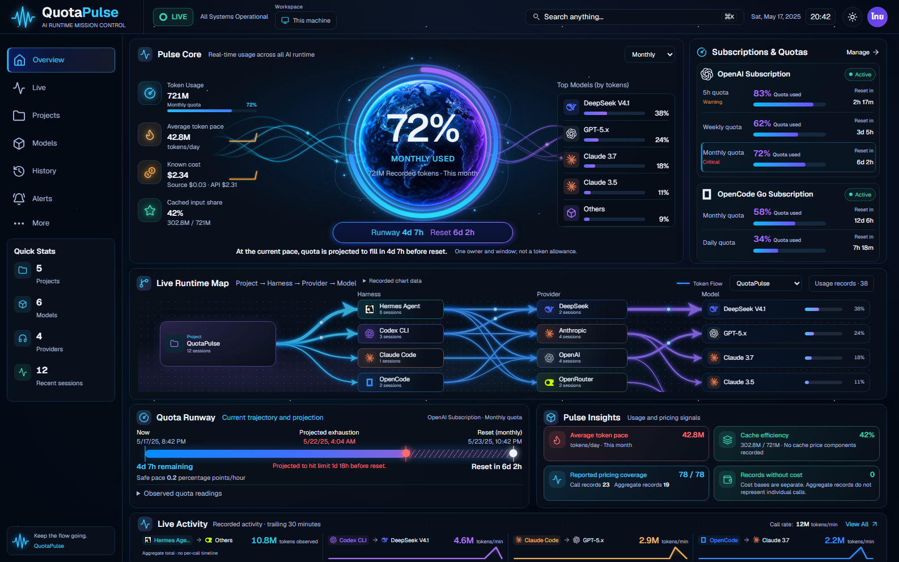

Current Overview captures use a deterministic fixture for review. The running app continues to show daemon data. Use the overlay control to compare placement and color; it does not claim visual acceptance.

 Production app — synthetic review fixture
Production app — synthetic review fixture